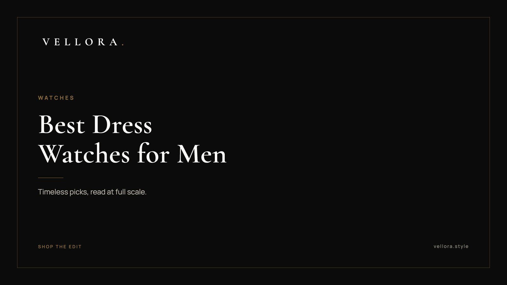

WATCHES
Best Dress Watches for Men 2026: Timeless Picks
By Vansh Shah, Founder

- A dress watch is slim, simple and sized to slip under a shirt cuff. Most sit between 36 mm and 40 mm.
- Two pieces from our edit fit the brief closely: the 1908, reference 52508, and the Day-Date 40, reference 228238.
- Automatic movements reward the wearer who likes mechanics. Quartz rewards the one who wants accuracy without upkeep.
- Minimalist dials age best. Fewer hands, fewer words, more space.
- A leather strap in black or dark brown is the classic pairing. Change the strap before you change the watch.
The best dress watches for men share a short list of traits. They are thin enough to slide under a cuff, quiet enough to sit beside a suit without competing with it, and simple enough to read in a glance across a dinner table. Size runs small by modern standards, often 36 mm to 40 mm. The dial says the time and very little else. That restraint is why the best dress watches for men rarely date.
We built this list of the best dress watches for men around two pieces we carry and eight classic styles worth knowing, each described by case, movement and strap. We have kept specs to what our catalog states for our own pieces, and described the rest as styles rather than models. If you are weighing the best dress watches for men against an everyday or travel watch, the guide also covers automatic vs quartz, minimalist dials, and which watch to wear most days.
What makes a dress watch
A dress watch is defined more by what it leaves out than by what it adds.
- A slim case, so it does not catch on a cuff.
- No rotating bezel, no heavy crown guards, no loud lume.
- A clean dial, usually two or three hands, sometimes a small date.
- A leather strap, or a fine bracelet in steel or gold.
A hand-wound movement allows the thinnest cases, since it has no winding rotor. Quartz can be thin too. Automatics run a little thicker but wind themselves as you wear them.
The 10 picks: best watches for men 2026, dress edition
These are our picks for when the occasion asks for a jacket. The first two are in our edit. The other eight are styles you will find across many makers.
1. The 1908, reference 52508

- Case: 39 mm, 18 ct yellow gold, polished finish, per our catalog.
- Movement and strap: see the product page for the full listing.
The 1908, reference 52508 is the closest thing in our edit to the textbook dress watch. A polished gold case at 39 mm sits low and warm on the wrist and reads formal without being showy. Verdict: the one we would choose for weddings, evenings and anything black tie.
2. The Day-Date 40, reference 228238

- Case: Oyster, 40 mm, yellow gold, per our catalog.
- Display: the day and the date, as the name says.
The Day-Date 40, reference 228238 is a dressier gold watch with more presence than the 1908. At 40 mm it suits a medium or larger wrist. Verdict: for the man who wants one gold watch that works at a board meeting and a family function alike.
3. The slim white dial on black leather
- Case: typically 36 mm to 39 mm in steel or gold.
- Movement: hand-wound, automatic or quartz.
- Strap: black leather.
The default. Baton or Roman markers, two or three hands, nothing else. Verdict: if you own one dress watch, this is the safest shape for it.
4. The small seconds dress watch
- Case: typically 36 mm to 40 mm.
- Movement: often hand-wound or automatic.
- Strap: brown or black leather.
The seconds move to a small sub-dial, usually above 6 o'clock. It is a traditional layout that adds a little detail without clutter. Verdict: for the buyer who likes a mechanical watch and a slightly older look.
5. The steel automatic with a silver dial and date
- Case: typically 38 mm to 40 mm in steel.
- Movement: automatic.
- Strap: leather or a slim steel bracelet.
This is where dress meets daily. A sunburst silver dial catches light softly, and a small date window earns its place on a working watch. Verdict: one of the best automatic watches for men who want a single piece for office and evening.
6. The rectangular case on leather
- Case: rectangular, sized for a slim wrist.
- Movement: often quartz or hand-wound, which keeps it thin.
- Strap: black, brown or dark blue leather.
A rectangle breaks up a wardrobe of round watches and sits very flat. Verdict: for someone who wants a dress watch that looks like a choice, not a default.
7. The ultra-thin two-hand watch
- Case: very thin, often 36 mm to 38 mm.
- Movement: hand-wound or quartz.
- Strap: fine leather.
Hours and minutes only. No seconds hand, no date. Verdict: the purest dress watch there is, and one of the best minimalist watches for men.
8. The black dial evening watch
- Case: typically 38 mm to 40 mm.
- Movement: automatic or quartz.
- Strap: black leather or a steel bracelet.
A black dial with polished markers is quieter at night than white, and pairs well with a dark suit. Verdict: the evening specialist.
9. The moonphase dress watch
- Case: typically 38 mm to 40 mm.
- Movement: automatic or quartz.
- Strap: leather.
A small window shows the phase of the moon. It is a traditional complication that softens a formal dial. Verdict: for the buyer who wants one gentle detail beyond the time.
10. The steel dress watch on a fine bracelet
- Case: typically 36 mm to 39 mm.
- Movement: automatic or quartz.
- Bracelet: slim steel links or mesh.
For heat and humidity, a bracelet often beats leather. It also moves easily from a linen shirt to a jacket. Verdict: the dress watch built for Indian summers.
The picks at a glance
| Pick | Case | Movement | Strap or bracelet | Best for |
|---|---|---|---|---|
| 1908, ref. 52508 | 39 mm, 18 ct yellow gold | See product page | See product page | Formal evenings |
| Day-Date 40, ref. 228238 | Oyster, 40 mm, yellow gold | See product page | See product page | One gold watch for everything |
| Slim white dial | 36 mm to 39 mm | Any | Black leather | First dress watch |
| Small seconds | 36 mm to 40 mm | Mechanical | Leather | Traditional taste |
| Silver dial with date | 38 mm to 40 mm | Automatic | Leather or steel | Office and evening |
| Rectangular case | Slim | Quartz or hand-wound | Leather | A distinct shape |
| Ultra-thin two-hand | 36 mm to 38 mm | Hand-wound or quartz | Leather | Pure minimalism |
| Black dial | 38 mm to 40 mm | Automatic or quartz | Leather or steel | Evenings |
| Moonphase | 38 mm to 40 mm | Automatic or quartz | Leather | One soft complication |
| Fine bracelet | 36 mm to 39 mm | Automatic or quartz | Steel | Heat and humidity |
Automatic vs quartz watch: which suits a dress watch
The automatic vs quartz watch question comes down to what you want from the object.
An automatic is mechanical. A weighted rotor winds the mainspring as your wrist moves, and a balance wheel keeps the beat. Wear it most days and it keeps running. Leave it for a few days and it stops, and you set it again. The seconds hand sweeps rather than ticks. Many buyers looking for the best automatic watches for men want exactly that: a small machine they can feel working.
A quartz watch runs on a battery and a vibrating quartz crystal. It keeps more accurate time than a mechanical movement, needs a battery change every few years, and can be very thin. For a dress watch worn only a few times a month, quartz is practical. It is always ready.
Solar is a third route, a quartz watch charged by light. Our Seiko Prospex pieces are solar, though they are sports chronographs rather than dress watches.
| Automatic | Quartz | |
|---|---|---|
| Power | Mainspring, wound by wrist motion | Battery |
| Accuracy | Good, varies by movement | Very high |
| Upkeep | Regular wear, periodic service | Battery change every few years |
| Thickness | Usually a little thicker | Can be very thin |
| Feel | Sweeping seconds, mechanical character | Ticking seconds, set and forget |
Minimalist styles, and why they last
The best minimalist watches for men follow a few quiet rules. A clean dial in white, silver, cream or black. Thin hands and simple markers. Little or no text on the dial. A case without decoration.
Minimalism works because it leaves nothing to go out of style. A busy dial ties a watch to the year it was designed. A plain one keeps reading as current. If you are unsure between two dress watches, choose the one with less on the dial.
The best everyday luxury watch is not always a dress watch
A dress watch is a specialist. The best everyday luxury watch usually needs to handle more: a commute, a rainy day, a weekend. Steel cases, a bracelet and some water resistance help.
That is why many men pair a dress watch with one sturdier piece. In our edit, the GMT-Master II, reference 126710GRNR, Oyster, 40 mm, in Oystersteel, is the obvious companion: a travel watch that wears easily every day. For a fuller view of what to wear most days, read our guide to the best luxury watches for men or our note on the top luxury watch brands worth knowing. The best everyday luxury watch is the one that suits your week. The dress watch suits your evenings.
We, the Vellora team, keep the full watch edit small on purpose. Read it slowly.